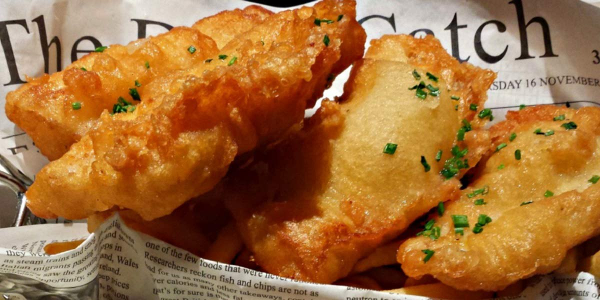

Fish Pakora
Recipe Specification
Ingredients List
| Ingredients | Quantity |
|---|---|
| Cod fillet | 500g |
| Lemon | 1x1 |
| Gram Flour | 250g |
| Red Chilli Powder | 1 tsp |
| Turmeric | ½ tsp |
| Cumin Powder | ½ tsp |
| Table Salt | 2 tsp |
| Bicarbonate of Soda | ¼ tsp |
| Chaat Masala | 1 tsp |
| Vegetable Oil | 2 Litres |
Yield: 4 portions
Preparation
- Cut cod into 1 inch pieces.
- Juice lemon.
- Marinade cod pieces in lemon juice and 1 tsp of salt for 15 minutes.
- Whisk gram flour with chilli powder, turmeric, ground cumin, bicarbonate of soda, 1 tsp of salt and 100ml of water.
- Wash marinade off cod piece and pat dry.
Cooking Instructions
- Place a saucepan of vegetable oil on a medium/high heat and bring to 170’C in temperature.
- Coat cod in the remaining gram flour, shake off any excess flour and cover with batter. Slowly drop pakora into hot oil and cook for 3-4 minutes. Do not overfill saucepan and cook in batches.

Serving Suggestions
Serve with mint and coriander chutney.
Storing instructions
Consume when made.